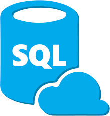

I am a young professional with work experience in Supply Chain, Civil Engineering, and Analytics. My passion is data - I am constantly seeking to further my education and grow as an Analyst. Below you can see some of the projects I have worked on through school or my own personal self studying.

Here you can find all of my projects and models in RStudio. These include Exploratory Data Analysis (EDA), Data Visualization, Logistsic Regression, Linear Regression, Neaural Networks, k-Nearest-Neighbors, Classification and Regression Trees (CARTs), and Unsupervised Learning.

Here you can find all of my Projects in SQL. These include finding insights with Covid-19 data and data cleaning with Nashville Housing Data.

Here you can find all my projects and models in Python. These include Amazon Web scrapping, Correlation insights with Movie Data, Decsion Models, and Optimization Models.

Here you can you find all my dashboards and Projects in Tableau. This includes my Covid Data Dashboard, Video Game Data Dashboard, and Airbnb Data Dashboard.

Here you can find all of my projects and workbooks with Microsoft excel. These include Conditional Formatting, Data Visualizations, Advanced Functions, Advanced Filtering, Model Analysis Tools, Spreadsheet Modeling, Monte Carlo Simulations, Frequency Distribution, Power Pivot, Dynamic Ranges, Form Controls, Pivot Tables and Visualizations, Template Design, Optimization Modeling, and Probability Modeling.